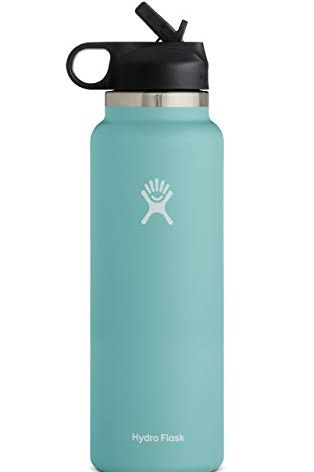
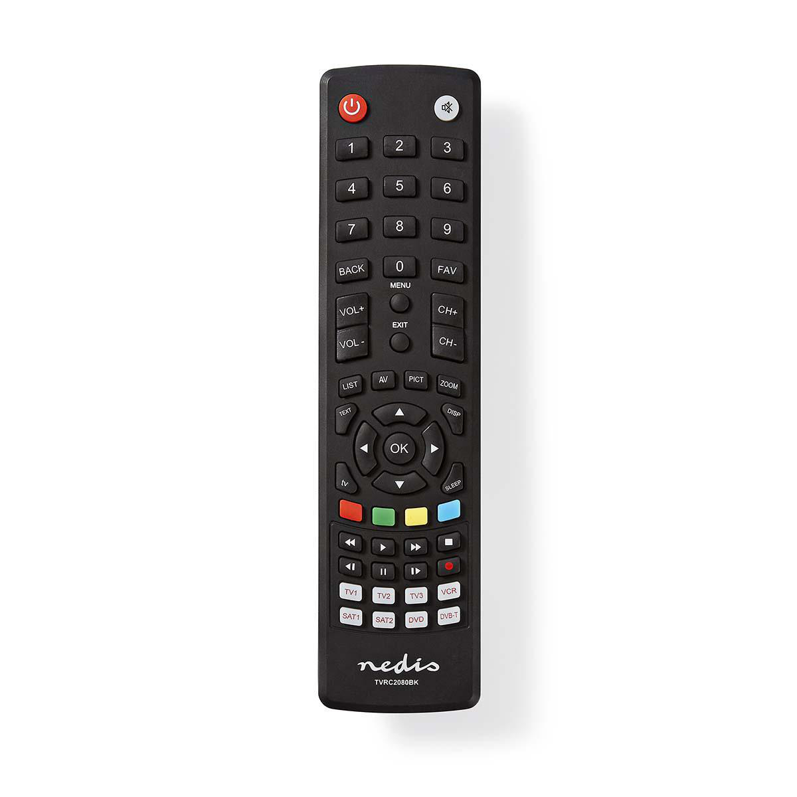
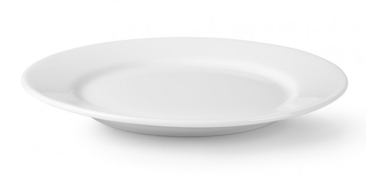
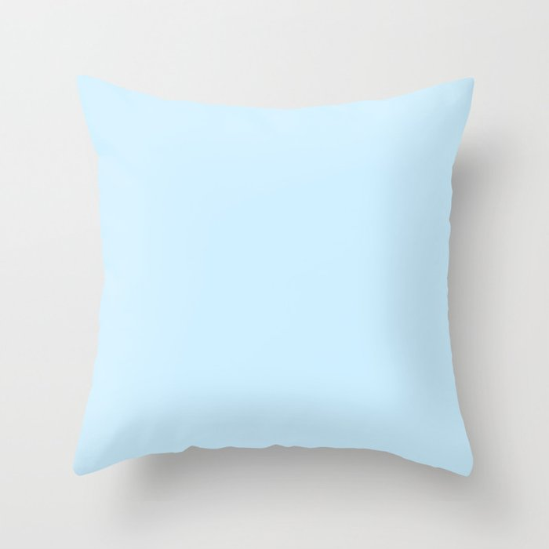
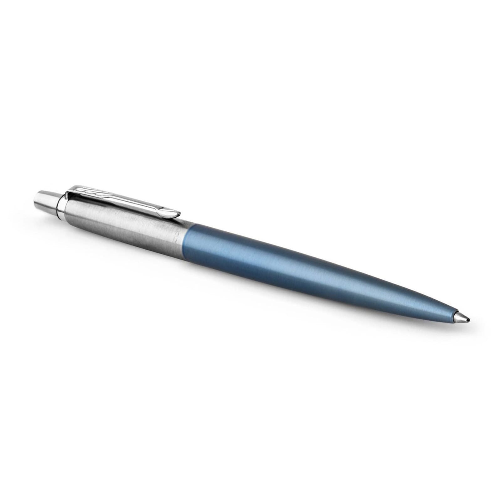
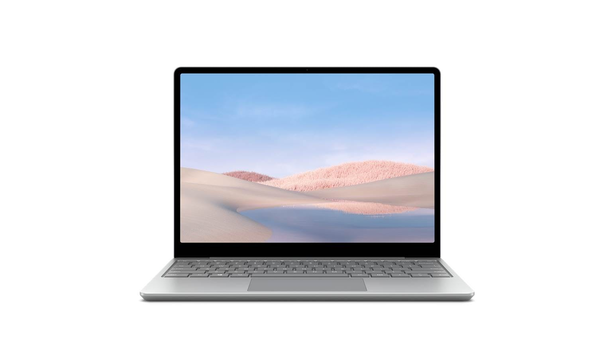

Google Lens VS MobileNet!
Google Lens- Book full of words
MobileNet- Printer
Result: Google Lens was more accurate since object was a book.

MobileNet- Waterbottle
Google Lens- watterbottle
Result: Both of them were correct as object was Waterbottle
MobileNet- Teddy bear
Google Lens- Stuffed dog toy
Result: Google Lens was more accurate since object was a stuffed dog toy.

MobileNet- Remote
Google Lens- Remote
Result: Both are correct. The object was a remote

MobileNet- Washbasin
Google Lens- Plate
Result: Google Lens is more accurate as the object was a plate.

MobileNet- Pillow
Google Lens- Throw pillow
Result: MobileNet was more accurate since this object was a pillow.
MobileNet- Piggy Bank
Google Lens- Piggy Bank
Result: Both were correct since this object was a piggy bank.
MobileNet- phone
Google Lens- phone
Result: Both are correct. Object: Phone.

MobileNet- Ballpoint Pen
Google Lens- Pen
Result: MobileNet is more accurate. Object : Pen

MobileNet- Computer
Google Lens- laptop
Result: Google Lens is more accurate. Object: Laptop
Conclusion- I have tested 10 images. Out of those 10, Google Lens got 8 of them correct. MobileNet got 6 correct. Overall, Google Lens was more correct since it got 8 correct.